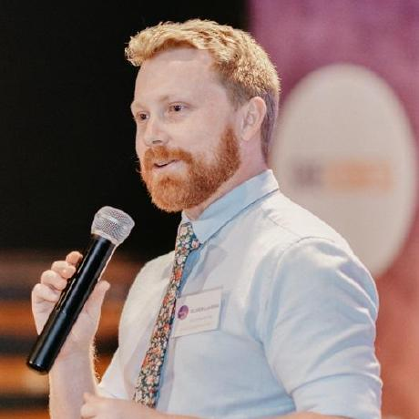
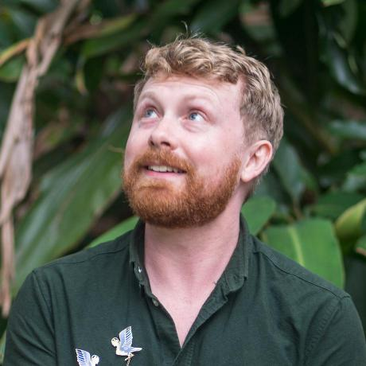

Click here to download a copy of this CV as a PDF
Contact

Software Developer
Nimbly innovative, doggedly methodical IT professional with a talent for mentorship and communication. Four years’ experience working with Python, Javascript, and relational databases to construct apps and API systems from the ground up. Experience working in junior dev ops and data contexts using AWS, Python data frameworks, and machine learning.
Empathic teacher, equally capable of elegantly presenting concepts to an entire room or shifting to meet an individual’s specific learning style. Accomplished and skilled communicator with recent, recognized success as a coding educator.
Object oriented design adept, with a knack for cutting through to the heart of a problem to meld theoretical concepts with practical necessities. Knows that a solution is not complete until it can be simply communicated and easily accessible to the whole team. Natural supporter and collaborator with a passion for helping others thrive.
Goals
To find a full-time position where I can use my proven skills and passion for sharing knowledge to create value in the world. To continue growing and improving my skillset as part of a welcoming and cheerful team. To become the best coder, mentor, person, and rock climber that I can be, and to help others find the same success.
Code
- Python (Flask/Django/Numpy)
- JS (React/Node/Express)
- C# (.Net)
- HTML/CSS
- Markdown
- SQL + NoSQL (Postgres/MongoDB)
Tools
- Git/Github
- AWS
- REST/JSON
- Insomnia
- VS Code (IDE/REPL)
- Linux/Bash
Skills
- Excellent public speaker
- Experienced mentor
- Inclusive team builder
- Documentation wizard
- Attentive listener
- Lightning learner

Career Summary
Lead Educator – Coder Academy, 2021-2022
At Coder Academy I was effectively a lecturer, delivering content and running assessment for multiple cohorts of the tertiary-certified Diploma of Web Development bootcamp course.
- Delivered content (both in-person and live online) covering Python/Flask, discrete mathematics, React/Javascript, HTML/CSS, databases, UX/UI, DevOps, security, etc.
- Lead the development of the upcoming Diploma of Data Science bootcamp, planning and synthesizing learning materials, assessment, and automated test suites.
- Coordinated a small team of educators to deliver learning support and assessment grading across multiple cohorts.
Key Achievements
- Won employee of the year in my first with the company, acknowledged for my work developing new tertiary-level content while also delivering education full-time.
- Excellent student reviews and outcomes.
Lead Mentor/Mentor – She Codes Brisbane, 2020
- Lead the content delivery at a 6-month coding bootcamp, working to foster inclusivity and equality in IT by offering sponsored tuition in web development to women.
- Delivered clear, insightful explanations of content, covering Object Oriented coding, Python, Django, Django Rest Framework, RESTful API design to a cohort of ~20 adults.
- Helped foster an inclusive and supporting learning environment for a diverse group of students, each with unique needs and strengths.
- Demonstrated and encouraged practical skills such as testing, interpreting and solving errors, and agile teamwork methodology.
Key Achievements
- Every single student in the program emerged from the program having revolutionized their skillset and with an impressive improvement to their grasp on the content.
- In the final session of the course, a student who had been frustrated to the point of tears in their first lesson taught me a new technique in Django. Their success is their own, but it remains my most treasured moment of the course.
Backend Developer – Involved Volunteer Management, 2018-2020
- Startup software project working to develop a SaaS volunteer coordination suite for large events.
- Designing and implementing a complex, novel database structure and API system to handle large quantities of user data and facilitate operations for complex organizations.
- Creating simple, powerful authentication systems, access-control structures, and user confirmation implementations.
- Creating, documenting, and testing features through an iterative, Agile design process.
Key Achievements
- Turning a complex, loosely specified brief into a coherent, elegant program design.
- Maintaining a consistent output of fully-unit tested code.
Hospitality Management – Various, 2008-2018
Before my career transition into IT, I worked for ten years in the hospitality industry, starting as a bartender/waiter and progressing to management.
Education
Queensland University of Technology — Master of IT (Security)
Ongoing (part time)I currently study part time. My focus is on discrete mathematics and data science, as well as security management.
University of Queensland — Bachelor of Arts (Psychology and Formal Logic)
2008-2016 (part time)I studied part time while working full time from 2008-2016.
Interests
Avid rock climber ● Chess.com Elo rating ~1200 ● Board game addict
References
Dr Bianca Power — Academic Manager, Coder Academy
Email: bianca.power@coderacademy.edu.auMobile: 0435 973 410
Mr Zachary Reimers — Founder, Involved Volunteer Management
Email: zacharyreimers@gmail.comMobile: 0402 767 552